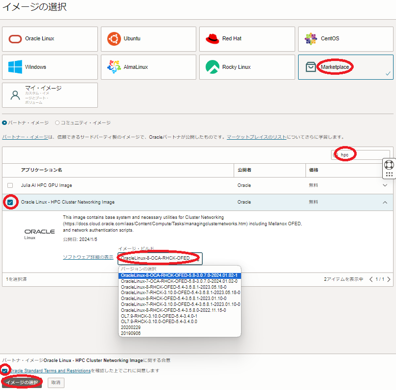
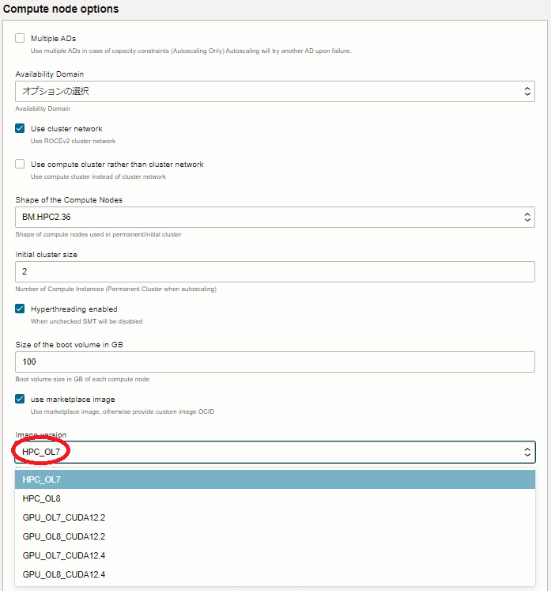

注意 : 本コンテンツ内の画面ショットは、現在のOCIコンソール画面と異なっている場合があります。
0. 概要
クラスタネットワーキングイメージ は、ベースOSに Oracle Linux を採用し、 クラスタ・ネットワーク への接続に必要な以下のソフトウェアが予めインストールされています。
- Mellanox OFED
クラスタ・ネットワーク にインスタンスを接続するNIC（NVIDIA Mellanox ConnectX）のドライバーソフトウェアです。 - WPAサプリカント
インスタンスが クラスタ・ネットワーク に接続する際行われる802.1X認証（※1）のクライアントソフトウェアです。 - 802.1X認証関連ユーティリティソフトウェア
インスタンスが クラスタ・ネットワーク に接続する際行われる802.1X認証に必要な機能を提供するユーティリティソフトウェアです。 - クラスタ・ネットワーク 設定ユーティリティソフトウェア
クラスタ・ネットワーク 接続用ネットワークインターフェース作成等の機能を提供するユーティリティソフトウェアです。
※1）802.1X認証の仕組みは、 ここ のサイトが参考になります。
また クラスタネットワーキングイメージ は、以下の観点で異なる用途のものが用意されています。
- 802.1X認証関連ユーティリティソフトウェアと クラスタ・ネットワーク 設定ユーティリティソフトウェアの提供方法
Oracle Cloud Agent （以降 OCA と呼称）プラグインとして提供するか、個別のRPMパッケージとして提供するかによる違いです。 - 対象のシェイプ
HPCシェイプ（※2）用（HPC クラスタネットワーキングイメージ ）か、GPUシェイプ（※3）用（GPU クラスタネットワーキングイメージ ）かの違いで、GPU クラスタネットワーキングイメージ はNVIDIA GPUドライバがインストールされています。 - ベースOSの Oracle Linux バージョン
バージョン7系か、バージョン8系かによる違いです。
※2）BM.HPC2.36 と BM.Optimized3.36
※3）BM.GPU4.8 と BM.GPU.A100-v2.8
以降では、用途毎に用意している クラスタネットワーキングイメージ の一覧と、選択した クラスタネットワーキングイメージ をインスタンスデプロイ時に指定する方法を解説します。
1. クラスタネットワーキングイメージ一覧
本章は、前章で説明した用途毎に用意している クラスタネットワーキングイメージ の一覧を下表にまとめます。
自身の用途に合わせて適切なものを選択し、 マーケットプレイス から入手します。
| No. | 対象シェイプ | Oracle Linux バージョン |
ユーティリティ 提供方法 |
OFED バージョン |
GPU/CUDA バージョン |
イメージ名の先頭 | マーケットプレイス URL（※4） |
|---|---|---|---|---|---|---|---|
| 1 | HPCシェイプ | 8.9 | OCA プラグイン | 23.10 | - | OracleLinux-8-OCA-RHCK-OFED-23.10-2.1.3.1-2024.03.15-0 | Link |
| 2 | 7.9 | OCA プラグイン | 23.10 | - | OracleLinux-7-OCA-RHCK-OFED-23.10-2.1.3.1-2024.03.15-0 | Link | |
| 3 | 8.8 | OCA プラグイン | 5.8 | - | OracleLinux-8-OCA-RHCK-OFED-5.8-3.0.7.0-2024.02.27 | Link | |
| 4 | 7.9 | OCA プラグイン | 5.8 | - | OracleLinux-7-OCA-RHCK-OFED-5.8-3.0.7.0-2024.02.27 | Link | |
| 5 | 8.7 | 個別RPM | 5.4 | - | OracleLinux-8-RHCK-OFED-5.4-3.6.8.1-2023.05.18 | Link | |
| 6 | 7.9 | 個別RPM | 5.4 | - | OracleLinux-7-RHCK-3.10.0-OFED-5.4-3.6.8.1-2023.05.18 | Link | |
| 7 | GPUシェイプ | 8.9 | OCA プラグイン | 23.10 | 550/12.4 | OracleLinux-8-OCA-RHCK-OFED-23.10-2.1.3.1-GPU-550-CUDA-12.4 | Link |
| 8 | 7.9 | OCA プラグイン | 23.10 | 550/12.4 | OracleLinux-7-OCA-RHCK-OFED-23.10-2.1.3.1-GPU-550-CUDA-12.4 | Link | |
| 9 | 8.8 | OCA プラグイン | 5.8 | 535/12.2 | OracleLinux-8-OCA-RHCK-OFED-5.8 | Link | |
| 10 | 7.9 | OCA プラグイン | 5.8 | 535/12.2 | OracleLinux-7-OCA-RHCK-OFED-5.8 | Link | |
| 11 | 7.9 | 個別RPM | 5.4 | 515/11.7 | OracleLinux-7-RHCK-3.10.0-OFED-5.4-3.6.8.1-GPU-515-2023.05.18 | Link |
※4）OCIへのログインを要求された場合は、ログインを完了して下さい。
2. クラスタネットワーキングイメージ指定方法
2-0. 概要
本章は、前章の一覧から選択した クラスタネットワーキングイメージ をインスタンスデプロイ時にどのように指定するかを解説します。
クラスタ・ネットワーク に接続するインスタンスのデプロイ方法は、主に以下3種類が存在します。
- OCIコンソールを使用する方法
- HPCクラスタスタック を使用する方法
- Terraform スクリプトを使用する方法
本章は、選択した クラスタネットワーキングイメージ をどのように指定するか、これらのデプロイ方法毎に解説します。
2-1. OCIコンソールを使用する方法
OCIコンソールを使用して クラスタ・ネットワーク に接続するインスタンスをデプロイする場合、 インスタンス構成 を予め作成しますが、この インスタンス構成 の イメージとシェイプ フィールドで クラスタネットワーキングイメージ を選択します。
以下 イメージの選択 サイドバーで、 Marketplace を選択し検索フィールドに hpc （HPC クラスタネットワーキングイメージ ）か gpu （GPU クラスタネットワーキングイメージ ）と入力して表示される Oracle Linux - HPC Cluster Networking Image あるいは Oracle Linux - GPU Cluster Networking Image を選択して表示される イメージ・ビルド フィールドで適切なOSイメージを選択（※5）し、 Oracle Standard Terms and Restrictionsを確認した上でこれに同意します チェックボックスをチェックし イメージの選択 ボタンをクリックします。

※5）前章一覧表中の イメージ名の先頭 列を参照し、適切な イメージ・ビルド を選択します。
2-2. HPCクラスタスタックを使用する方法
HPCクラスタスタック を使用して クラスタ・ネットワーク に接続するインスタンスをデプロイする場合、 スタック メニュー中の以下 Compute node options フィールドの Image version プルダウンメニューで適切な クラスタネットワーキングイメージ を選択します。

各選択肢は、以下の クラスタネットワーキングイメージ に対応しています。
| メニュー名 | 前章一覧表中のNo. |
|---|---|
| HPC_OL7 | 2 |
| HPC_OL8 | 1 |
| GPU_OL7_CUDA12.2 | 10 |
| GPU_OL8_CUDA12.2 | 9 |
| GPU_OL7_CUDA12.4 | 8 |
| GPU_OL8_CUDA12.4 | 7 |
なお、個別RPMを使用する クラスタネットワーキングイメージ は、現在最新の HPCクラスタスタック では使用することが出来ません。
2-3. Terraformスクリプトを使用する方法
Terraform スクリプトを使用して クラスタ・ネットワーク に接続するインスタンスをデプロイする場合、通常イメージのOCIDをスクリプト内に指定します。
前章一覧表中の各 クラスタネットワーキングイメージ は、以下のOCIDに対応しています。
| 前章一覧表中のNo. | OCID |
|---|---|
| 1 | ocid1.image.oc1..aaaaaaaaxiqlqer2ycd7hgto7in7raojq7v5kud6wlakmm7u7q64ai352tzq |
| 2 | ocid1.image.oc1..aaaaaaaano7btfbh7cvbaygka4fehemtsal7f7l2qx6oqvbwua6xnszdvaha |
| 3 | ocid1.image.oc1..aaaaaaaa2irxaj3eqti6nlggadyo2avsinc6cscxrphsldiuqebcaljlqomq |
| 4 | ocid1.image.oc1..aaaaaaaabjywapqbljm2hqmpcf6rl2xsc7miz4ilx2bb6o2iwcaf37smyxqa |
| 5 | ocid1.image.oc1..aaaaaaaaceagnur6krcfous5gxp2iwkv2teiqijbntbpwc4b3alxkzyqi25a |
| 6 | ocid1.image.oc1..aaaaaaaa2ukz3tuyn2st5p4pnxsqx4zzg6fi25d7ns2rvywqaalgcer2tepa |
| 7 | ocid1.image.oc1..aaaaaaaag36bbqszitkjcnnuauf3tiu3dg6bg2q7goj2uaxbbgnszan66fna |
| 8 | ocid1.image.oc1..aaaaaaaa42ozstmmllgevxjvcbompvj6632lwlsigaudh26os7rsmfbcoilq |
| 9 | ocid1.image.oc1..aaaaaaaaeka3qe2v5ucxztilltohgmsyr63s3cd55uidtve4mtietoafopeq |
| 10 | ocid1.image.oc1..aaaaaaaaliisi4m7wcz6nh7mdgezjvwxdozktccuxoawlgyephuqomotb3ia |
| 11 | ocid1.image.oc1..aaaaaaaalro3vf5xh34zvg42i3j5c4kp6rx4ndoeq6c5v5zzotl5gwjrnxra |